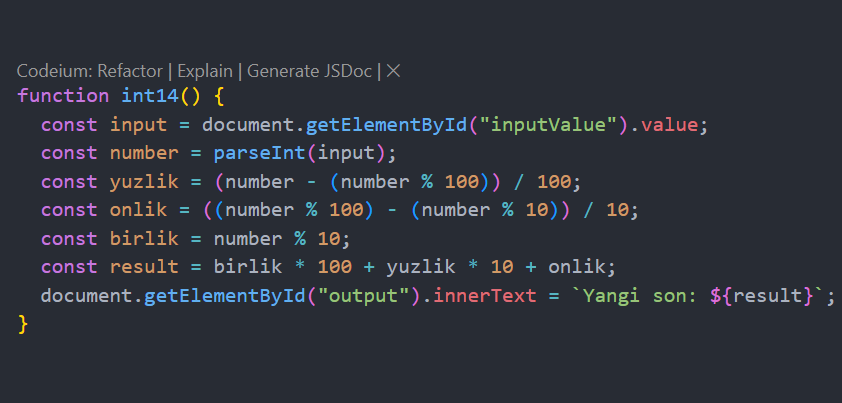
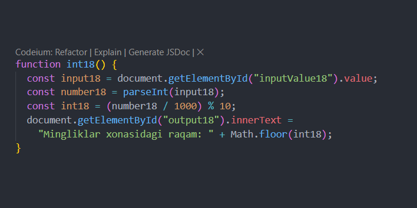
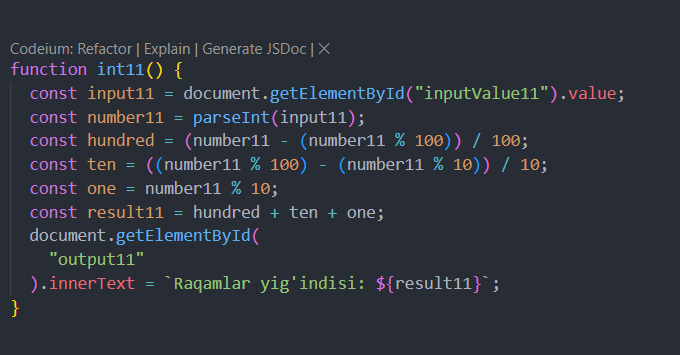
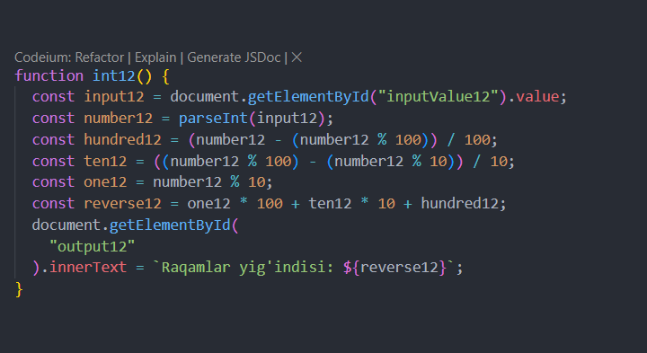
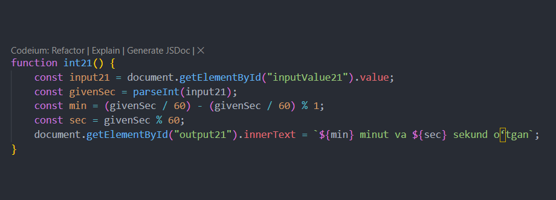

Integer14. Uch xonali son berilgan. Uning o‘ngdan
birinchi raqamini o‘chirib chap tarafga yozishdan hosil bo‘lgan
sonni aniqlovchi programma tuzilsin.
Output

Integer18. 999 dan katta bo‘lgan son berilgan. Bir
marta bo‘lib butunni va bo‘lib qoldiqni olish operatsiyasidan
foydalanib berilgan sonni mingliklar xonasidagi sonni aniqlovchi
programma tuzilsin.
Output

Integer11. Uch xonali son berilgan. Uning raqamlar
yig‘indisini aniqlovchi programma tuzilsin.
Output

Integer12. Uch xonali son berilgan. Uning raqamlarini
teskari tartibda yozishdan hosil bo‘lgan sonni
Output

Integer21 . Kun boshidan boshlab N sekund vaqt o‘tti.
Kun boshidan boshlab qancha minut va sekund o‘tganini aniqlovchi
programma tuzilsin.
Output

Integer14. Uch xonali son berilgan. Uning o‘ngdan
birinchi raqamini o‘chirib chap tarafga yozishdan hosil bo‘lgan
sonni aniqlovchi programma tuzilsin.